| [ Team LiB ] |
|
1.1 IntroductionProcess engineers are often responsible for the operation of chemical processes. As these processes become larger scale and/or more complex, the role of process automation becomes more and more important. The objective of this textbook is to teach process engineers how to design and tune feedback controllers for the automated operation of chemical processes. A conceptual process block diagram for a chemical process is shown in Figure 1-1. Notice that the inputs are classified as either manipulated or disturbance variables and the outputs are classified as measured or unmeasured in Figure 1-1a. To automate the operation of a process, it is important to use measurements of process outputs or disturbance inputs to make decisions about the proper values of manipulated inputs. This is the purpose of the controller shown in Figure 1-1b; the measurement and control signals are shown as dashed lines. These initial concepts probably seem very vague or abstract to you at this point. Do not worry, because we present a number of examples in this chapter to clarify these ideas. Figure 1-1. Conceptual process input/output block diagram.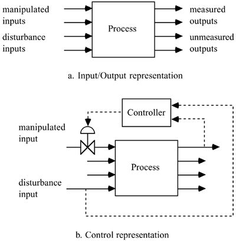 The development of a control strategy consists of formulating or identifying the following.
Here we discuss each of the steps in formulating a control problem in more detail.
A particularly important concept used in control system design is process gain. The process gain is the sensitivity of a process output to a change in the process input. If an increase in a process input leads to an increase in the process output, this is known as a positive gain. If, on the other hand, an increase in the process input leads to a decrease in the process output, this is known as a negative gain. The magnitude of the process gain is also important. For example, a change in power (input) of 0.5 kW to a laboratory-scale heater may lead to a fluid temperature (output) change of 10°C; this is a process gain (change in output/change in input) of 20°C/kW. The same input power change of 0.5 kW to a larger scale heater may only yield an output change of 0.5°C, corresponding to a process gain of 1°C/kW. Once the control structure is determined, it is important to decide on the control algorithm. The control algorithm uses measured output variable values (along with desired output values) to change the manipulated input variable. A control algorithm has a number of control parameters, which must be "tuned" (adjusted) to have acceptable performance. Often the tuning is done on a simulation model before implementing the control strategy on the actual process. A significant portion of this textbook is on the use of model-based control, that is, controllers that have a model of the process "built in." This approach is best illustrated by way of example. Since many important concepts, such as control instrumentation diagrams and control block diagrams, are introduced in the next examples, it is important that you study them thoroughly. Example 1.1: Surge TankSurge tanks are often used as intermediate storage for fluid streams being transferred between process units. Consider the process flow diagram shown in Figure 1-2, where a fluid stream from process 1 is fed to the surge tank; the effluent from the surge tank is sent to process 2. Figure 1-2. Tank level problem.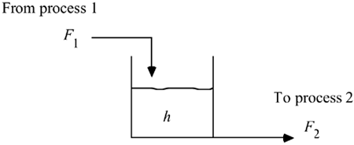 There are obvious constraints on the height in this tank. If the tank overflows it may create safety and environmental hazards, which may also have economic significance. Let us analyze this system using a step-by-step procedure.
Feedback ControlThe measured variable for a feedback control strategy is the tank height. Which input variable is manipulated depends on what is happening in process 1 and process 2. Let us consider two different scenarios. Scenario 1Process 2 regulates the flow-rate F2. This could happen, for example, if process 2 is a steam generation system and process 1 is a deionization process. Process 2 varies the flow rate of water (F2) depending on the steam demand. As far as the tank process is concerned, F2 is a "wild" (disturbance) stream because the regulation of F2 is determined by another system. In this case we would use F1 as the manipulated variable; that is, F1 is adjusted to maintain a desired tank height. The control and instrumentation diagram for a feedback control strategy for scenario 1 is shown in Figure 1-3. Notice that the level transmitter (LT) sends the measured height of liquid in the tank (hm) to the level controller (LC). The LC compares the measured level with the desired level (hsp, the height setpoint) and sends a pressure signal (Pv) to the valve. This valve top pressure moves the valve stem up and down, changing the flow rate through the valve (F1). If the controller is designed properly, the flow rate changes to bring the tank height close to the desired setpoint. In this process and instrumentation diagram we use dashed lines to indicate signals between different pieces of instrumentation. Figure 1-3. Feedback control strategy 1. The level is measured and the inlet flow rate (valve position) is manipulated.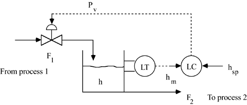 A simplified block diagram representing this system is shown in Figure 1-4. Each signal and device (or process) is shown on the block diagram. We use a slightly different form for block diagrams when we use transfer function notation for control system analysis in Chapter 5. Note that each block represents a dynamic element. We expect that the valve and LT dynamics will be much faster than the process dynamics. We also see clearly from the block diagram why this is known as a feedback control "loop." The controller "decides" on the valve position, which affects the inlet flow rate (the manipulated input), which affects the level; the outlet flow rate (the disturbance input) also affects the level. The level is measured, and that value is fed back to the controller [which compares the measured level with the desired level (setpoint)]. Figure 1-4. Feedback control schematic (block diagram) for scenario 1. F1 is manipulated and F2 is a disturbance.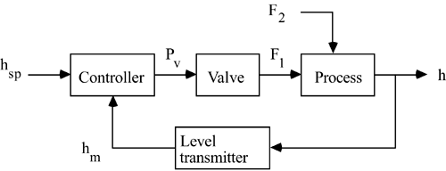 Notice that the control valve should be specified as fail-closed or air-to-open, so that the tank will not overflow on loss of instrument air or other valve failure. Scenario 2Process 1 regulates flow rate F1. This could happen, for example, if process 1 is producing a chemical compound that must be processed by process 2. Perhaps process 1 is set to produce F1 at a certain rate. F1 is then considered "wild" (a disturbance) by the tank process. In this case we would adjust F2 to maintain the tank height. Notice that the control valve should be specified as fail-open or air-to-close, so that the tank will not overflow on loss of instrument air or other valve failure. The process and instrumentation diagram for this scenario is shown in Figure 1-5. The only difference between this and the previous instrumentation diagram (Figure 1-3) is that F2 rather than F1 is manipulated. Figure 1-5. Feedback control strategy 2. Outlet flow rate is manipulated.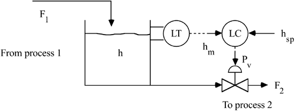 The simplified block diagram shown in Figure 1-6 differs from the previous case (Figure 1-4) only because F2 rather than F1 is manipulated. F1 is a disturbance input. Figure 1-6. Feedback control schematic (block diagram) for scenario 2. F2 is manipulated and F1 is a disturbance.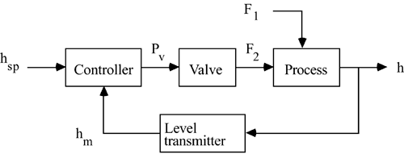 Feed-Forward ControlThe previous two feedback control strategies were based on measuring the output (tank height) and manipulating an input (the inlet flow rate in scenario 1 and the outlet flow rate in scenario 2). In each case the manipulated variable is changed after a disturbance affects the output. The advantage to a feed-forward control strategy is that a disturbance variable is measured and a manipulated variable is changed before the output is affected. Consider a case where the inlet flow rate can be changed by the upstream process unit and is therefore considered a disturbance variable. If we can measure the inlet flow rate, we can manipulate the outlet flow rate to maintain a constant tank height. This feed-forward control strategy is shown in Figure 1-7, where FM is the flow measurement device and FFC is the feed-forward controller. The corresponding control block diagram is shown in Figure 1-8. F1 is a disturbance input that directly affects the tank height; the value of F1 is measured by the FM device, and the information is used by an FFC to change the manipulated input, F2. Figure 1-7. Feed-forward control strategy. Inlet flow rate is measured and outlet flow rate is manipulated.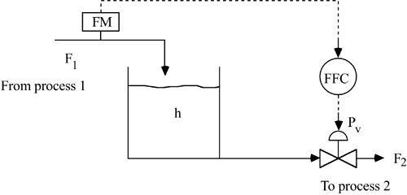 Figure 1-8. Feed-forward control schematic block diagram.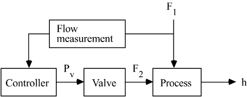 The main disadvantage to this approach is sensitivity to uncertainty. If the inlet flow rate is not perfectly measured or if the outlet flow rate cannot be manipulated perfectly, then the tank height will not be perfectly controlled. With any small disturbance or uncertainty, the tank will eventually overflow or run dry. In practice, FFC is combined with feedback control to account for uncertainty. A feed-forward/feedback strategy is shown in Figure 1-9, and the corresponding block diagram is shown in Figure 1-10. Here, the feed-forward portion allows immediate corrective action to be taken before the disturbance (inlet flow rate) actually affects the output measurement (tank height). The feedback controller adjusts the outlet flow rate to maintain the desired tank height, even with errors in the inlet flow-rate measurement. Figure 1-9. Feed-forward/feedback control strategy. The inlet flow rate is the measured disturbance, tank height is the measured output, and outlet flow rate is manipulated.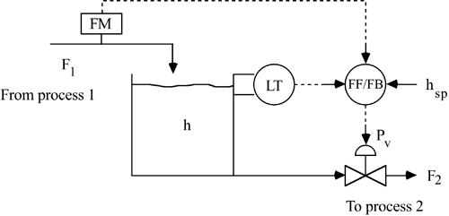 Figure 1-10. Feed-forward/feedback control schematic block diagram.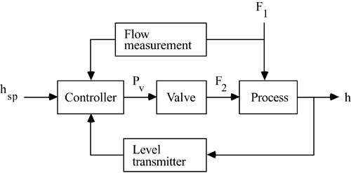 Discussion of Level Controller Tuning and the Dominant TimescaleNotice that we have not discussed the actual control algorithms; the details of control algorithms and tuning are delayed until Chapter 5. Conceptually, would you prefer to tune level controllers for "fast" or "slow" responses? When tanks are used as surge vessels it is usually desirable to tune the controllers for a slow return to the setpoint. This is particularly true for scenario 2, where the inlet flow rate is considered a disturbance variable. The outlet flow rate is manipulated but affects another process. In order to not upset the downstream process, we would like to change the outlet flow rate slowly, yet fast enough that the tank does not overflow or go dry. Related to the controller tuning issue is the importance of the dominant timescale of the process. Consider the case where the maximum tank volume is 200 gallons and the steady-state operating volume is 100 gallons. If the steady-state flow rate is 100 gallons/minute, the "residence time" would be 1 minute. Assume the inlet flow rate is a disturbance and outlet flow rate is manipulated (Figure 1-5). If the feed flow rate increased to 150 gallons/minute and the outlet flow rate did not change, the tank would overflow in 2 minutes. On the other hand, if the same vessel had a steady-state flow rate of 10 gallons/minute and the inlet flow suddenly increased to 15 gallons/minute (with no change in the outlet flow), it would take 20 minutes for the tank to overflow. Clearly, controller tuning and concern about controller failure is different for these two cases. The first example was fairly easy compared with most control-system synthesis problems in industry. Even for this simple example we found that there were many issues to be considered and a number of decisions (specification of a fail-open or fail-closed valve, etc.) that needed to be made. Often there will be many (and usually conflicting) objectives, many possible manipulated variables, and numerous possible measured variables. It is helpful to think of common, everyday activities in the context of control, so you will become familiar with the types of control problems that can arise in practice. The following activity is just such an example. Example 1.2: Taking a ShowerA common multivariable control problem that we face every day is taking a shower. A simplified process schematic is shown in Figure 1-11. We analyze this process step by step.
Figure 1-11. Process schematic for taking a shower.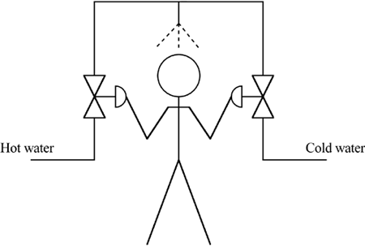 Some showers may have a relatively large time delay (or dead time) between when a manipulated variable change is made and when the actual output change is measured. This could happen, for example, if there was a large pipe run between the mixing point and the shower head (this would be considered an input time delay). Another type of time delay is measurement dead time, for example if your body takes a while to detect a change in the temperature of the stream contacting your body. Notice that the control strategy used has more manipulated variables (two valve positions and body movement) than measured outputs (total mixed-stream flow rate and temperature). In the shower example, the individual taking the shower served as the controller. The measurements and manipulations for this example are somewhat qualitative (you do not know the exact temperature or flow rate, for example). Most of the rest of the textbook consists of quantitative controller design procedures, that is, a mathematical model of the process is used to develop the control algorithm. This chapter has covered the important first step of control system development—identifying seven basic steps in analyzing a process control problem. We have used simple examples with which you are familiar. As you learn about more chemical and environmental processes, you should get in the habit of thinking about them from a process systems point of view, just as you have with these simple systems. |
| [ Team LiB ] |
|